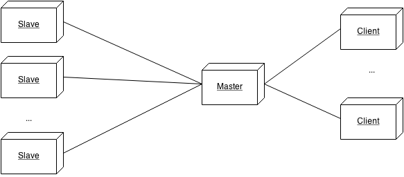
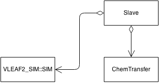
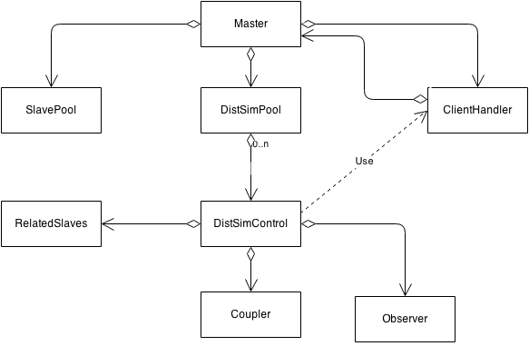

Bachelor Eindwerk
Groep Pluto
Door Ruben Mennes, Ruben Vereecken, Eveline Ververs & Thomas Pinna
Overzicht
- Inleiding
- Converter
- Post Processing
- Visualisatie
- Distributed Simulation
- Slot
Inleiding
(ga naar beneden!)
Distributed Simulation
- Inleiding tot het probleem
- Architectuur
- Protocol
- Slave beheer en Master lookup
- Fouten tolerantie
- Demo
Inleiding tot het probleem
Inleiding tot het probleem
- Verschillende afzonderlijke simulaties kunnen een koppling hebben
- 1 simulatie runnen is een zwaar process. Meerdere niet aan te raden op 1 machine
- Simulaties laten runnen en enkel de output files zijn belangrijk
Oplossing
Severs terbeschikking stellen die het process beheren en uitvoeren
Architectuur
Architectuur
Algemeen
- Client en masters communiceren met elkaar
- Master en slaves communiceren met elkaar
Architectuur
Slave
- Slave krijgt berichten van de master
- Slave zal de VLeaf2_Sim::Sim aansturen
- Na enkel stap zal de ChemTransfer de gevraagde waarde doorsturen naar Master
Architectuur
Master

- Master is de instantie die de SlavePool, DistSimPool en ClientHandler aanmaakt, opstart en controleerd
- Client handler zal alle Client requist afhandelen en alle beschibare clients bijhouden
- SlavePool bevat al de Slaves die momenteel niet behoren tot een sessie
- DistSimPool bevat al de lopende sessies
Architectuur
Master
- DistSimControl bevat 1 enkele sessie en zal deze controleren
- ReletadSlaves bevat al de Slaves die behoren tot deze sessie
- Coupler is de instantie die de daadwerkelijke koppling op zich neemt
- Observer zal er voor zorgen dat de output files worden opgeslagen
Visualisation
- Inleiding
- Moeilijkheden & Keuzes
- Architectuur
- Resultaat en vergelijking
Inleiding
- Huidige viewer in Qt geïmplementeerd
- Vraag naar OpenGL viewer
- Richting 3D (in de toekomst)
- Viewer met reliëf
Moeilijkheden & Keuzes
- OpenGL Compatibiliteit
- GL 3.1 + Compatibility Profile
- Gebruik van shaders? Uiteindelijk niet.
- Correcte weergave van schaduw